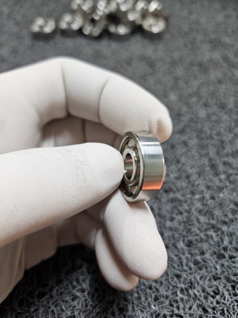
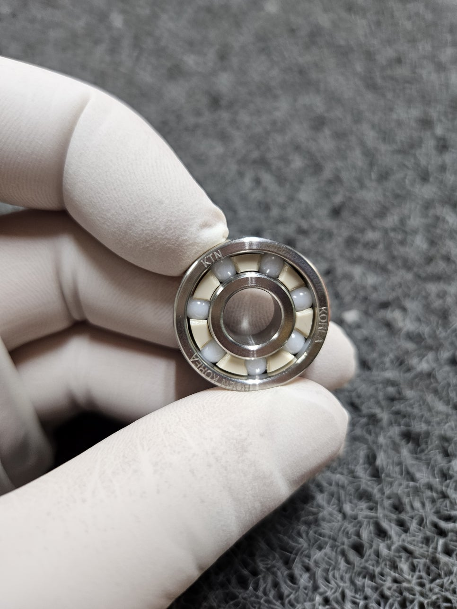
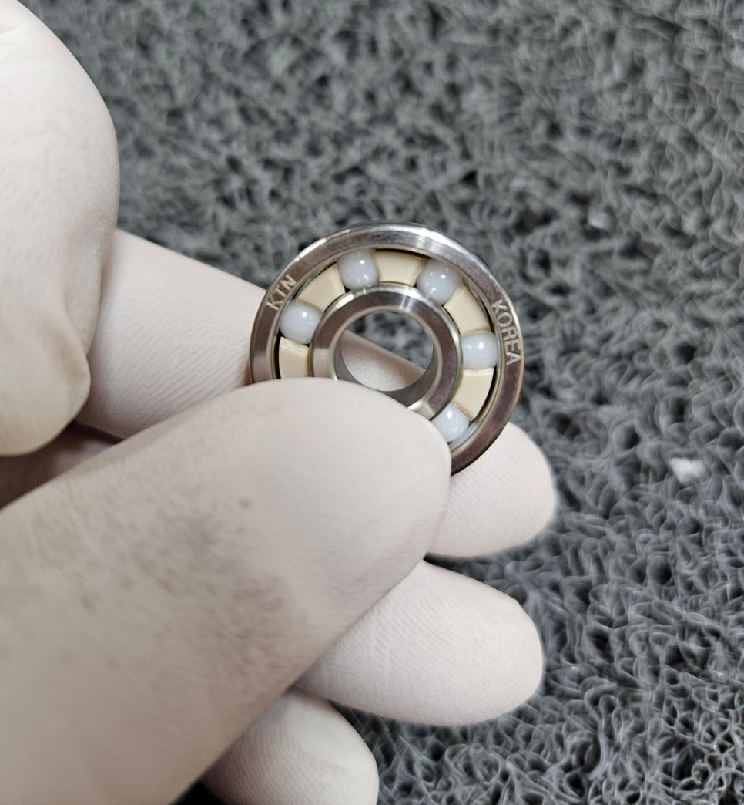
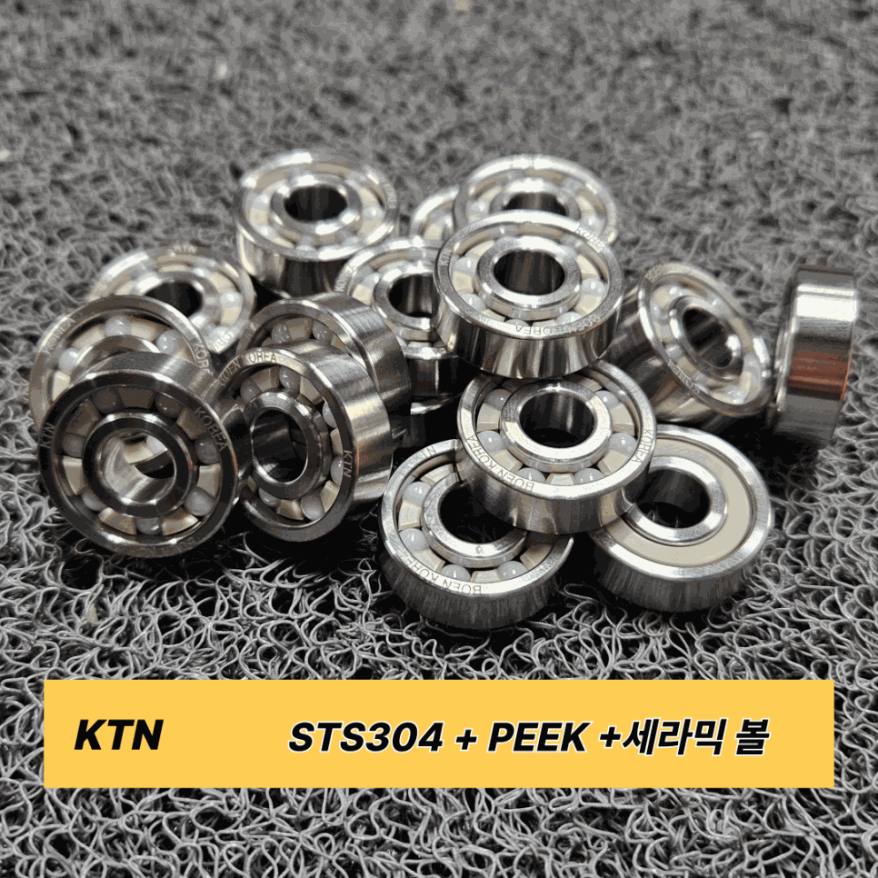

한 베어링 안에 소재가 3가지 들어가는 이유
볼베어링은 단순해 보이지만 내부 구조는 역할이 명확히 나뉩니다. 각 파트가 서로 다른 환경 스트레스를 받기 때문에, 파트별로 가장 적합한 소재를 따로 선택하는 것이 20년 현장 경험이 가르쳐 준 원칙입니다.
정밀 R가공 적용
강산·강알칼리 저항
고속·내마모·무부식
외륜 · 내륜: STS304 — 내식성과 강도, 정밀 R가공까지
외경과 내경 소재로 STS304(SUS304, 오스테나이트계 스테인리스)를 선택한 이유는 내식성과 기계적 강도를 동시에 만족시키기 때문입니다. 식품·제약·반도체·화학 공정처럼 위생 또는 부식 환경에서 오랫동안 검증된 소재입니다.
R가공을 빠뜨리면 왜 안 되나요?
STS 소재는 조금만 날카로운 부분이 있어도 작업자가 베일 위험이 있고,
회전이 균일하지 못합니다. KTN은 모든 외경·내경 모서리에
정밀 R가공을 적용해 부드러운 회전과 긴 수명을 동시에 확보합니다.
날카로움을 제거한다는 건 유지보수 비용을 줄이는 일이기도 합니다.

케이지(리테이너): PEEK — 금속보다 70% 가볍고, 강산·강알칼리에도 끄떡없습니다
케이지(리테이너)는 볼 간격을 유지하고 회전을 안정시키는 파트입니다. 일반 금속 케이지는 화학 환경에서 부식되거나 하중에 변형되는 경우가 있습니다. KTN이 PEEK를 선택한 이유는 세 가지입니다.
| 항목 | 일반 금속 케이지 | PEEK 케이지 |
|---|---|---|
| 무게 | 기준 | 금속 대비 70% 경량 |
| 내화학성 | 강산·강알칼리에 취약 | 강산·강알칼리 저항성 우수 |
| 사용 온도 | 일반 범위 | 250°C 연속 사용 가능 |
| 자기윤활성 | 없음 | 있음 — 별도 윤활제 절감 |
| 기계적 강도 | 높음 | 높은 강도 유지 |
UPE(초고분자량 폴리에틸렌) 케이지도 선택 가능합니다. 강한 충격 흡수와 탁월한 자기윤활성이 필요한 환경, 특히 저하중·고속 회전 조건에서는 UPE가 더 적합할 수 있습니다. 사용 환경을 알려주시면 PEEK와 UPE 중 최적 소재를 제안해 드립니다.
볼: ZrO₂(지르코니아) 세라믹 — 강철 볼이 못 가는 환경에서 씁니다
볼베어링의 핵심 부품인 볼은 가장 빠르게 마모되는 파트입니다. 일반 강철 볼은 고속 회전 시 발열이 크고, 산성·알칼리 환경에서 부식 이물질이 발생할 수 있습니다.
KTN은 ZrO₂(지르코니아) 세라믹 볼을 적용합니다. 세라믹 볼은 비전도성·비자성이기 때문에 반도체·의료기기·식품 라인처럼 정전기나 자성이 문제가 되는 청정 환경에서도 사용 가능합니다.



솔직히 말씀드리겠습니다.
이 조합이 모든 환경에 필요한 것은 아닙니다.
일반 건식 환경, 저속 저하중, 가격이 최우선이라면
표준 금속 볼베어링이 더 경제적입니다.
KTN의 STS304+PEEK+세라믹 조합은
강산·강알칼리·고온·정전기 민감 환경에서 베어링이 버텨줘야 하는 분을 위해 만들었습니다.
그런 라인이라면, 소재 선택 한 번으로 유지보수 주기와 교체 비용이 완전히 달라집니다.